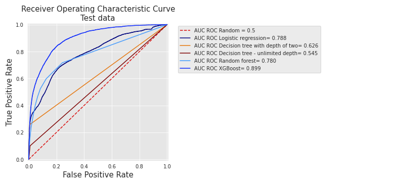
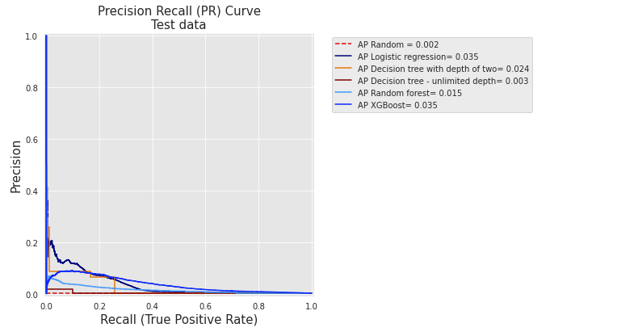
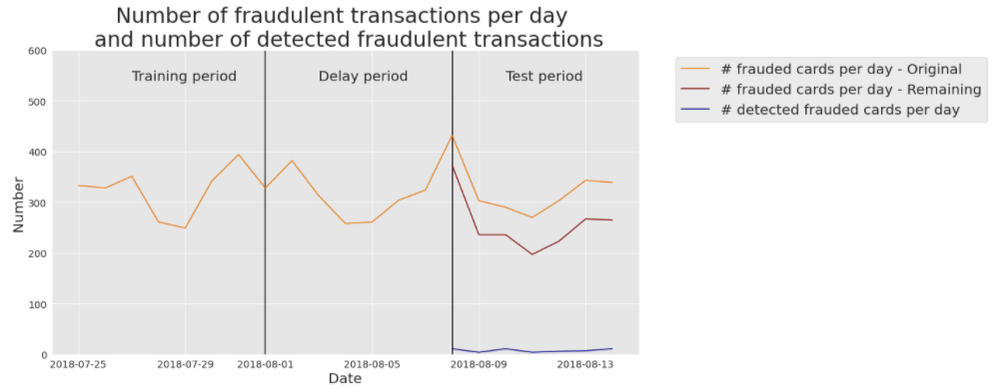

原单元格 5 · 0 行 · 静态逐行解析
空代码单元格
原文件中的空代码单元格，保留位置。它没有待执行语句，也没有需要补造的结果。
Chapter_4_PerformanceMetrics/Assessment_RealWorldData.ipynb
此notebook只有文字与图片说明以及一个空代码cell，没有可执行的真实交易建模流程。它展示原书2018年比利时Worldline电商数据上的历史ROC、PR与每日CP@100结果；原始数据因保密没有公开。阅读图时应把‘作者报告’与‘本次复现’分开。每日约40万笔、基率约0.25%属于该历史数据；较低AP受基率与区分难度共同影响。CP@100约0.1表示每天前100张候选卡平均约10张真实盗用，既不是10%的所有欺诈召回率，也不是十笔交易。卡级随机基线应依据候选卡比例，不能直接用交易欺诈比例代替。
打开对应 .ipynb 阅读副本This section extends the experimental results presented in Chapter 3, Real-world data. We first report the ROC and AP curves for the five baseline prediction models on real-world data. We then illustrate the daily card precision with $k=100$ using a decision tree of depth 2 as the prediction model.
Fig. 1 reports the ROC curves for the five baseline classifiers (Logistic regression, decision trees with depth 2 and unlimited depth, random forest, and XGBoost) on real-world data. The curves are similar to those obtained on simulated data in the Section {ref}Receiving_Operating_Characteristic_Curve. Decision trees have the lowest performances, while logistic regression, random forest, and XGBoost have higher performances.

Fig. 1. ROC curves for the five baseline classifiers (Logistic regression, Decision trees with depth 2 and unlimited depth, random forest, and XGBoost) on real-world data.
It can be noted that, contrary to the results obtained with simulated data, XGBoost performs significantly better than random forest and logistic regression (AUC ROC of 0.899 versus AUC ROC of 0.78 and 0.788, respectively).
Fig. 2 reports the PR curves for the same five baseline classifiers on real-world data. The curves are at first sight quite different from those obtained on simulated data ({ref}Precision_Recall_Curve).

Fig. 2. PR curves for the five baseline classifiers (Logistic regression, Decision trees with depth 2 and unlimited depth, random forest, and XGBoost) on real-world data.
These differences are caused by the performances in terms of average precision which are, overall, much lower than with simulated data. As a result, all curves are shrunk to lower precision values. The reason is twofold. First, the proportion of frauds is lower in the real-world dataset. Second, fraudulent transactions are also harder to detect, which results in more false positives as the detection threshold is increased.
Nonetheless, the relative performances of the different classifiers are similar to those obtained with simulated data. In particular, logistic regression and XGBoost have much higher performances than decision trees. It is worth noting that the performance of the random forest in terms of AP is however poor, and lower than that of a decision tree of depth two. This is the result of overfitting, an issue that will be addressed with model selection in the Chapter 5.
We finally report, as in {ref}Precision_Top_K_Metrics, the number of daily detected frauded cards using real-world data. The results are provided in Fig. 3, for a decision tree of depth 2.

Fig. 3. Number of daily detected frauded cards with real-data, using a decision tree of depth 2.
The real-world dataset contains much more transactions (around 400000 daily transactions) and as a result, the number of daily frauded cards is also higher (ranging between 280 and 420, with an average of around three hundred. Yellow line). Once the known frauded cards are removed, the number of cards that remain to detect ranges between 200 and 350 (Red line). Let us recall that the CP@100 for a decision tree of depth two was 0.1 ({ref}Baseline_FDS), that is, on average, 10 cards out of the 100 most suspicious are true positives. This is illustrated with the blue line, which represents the number of frauded cards that are effectively detected every day.
Note that the maximum number of correctly detected frauded cards is upper bounded by $k$. That is, a maximum number of 100 frauded cards may only be detected every day when $k=100$.
原文件中的空代码单元格，保留位置。它没有待执行语句，也没有需要补造的结果。